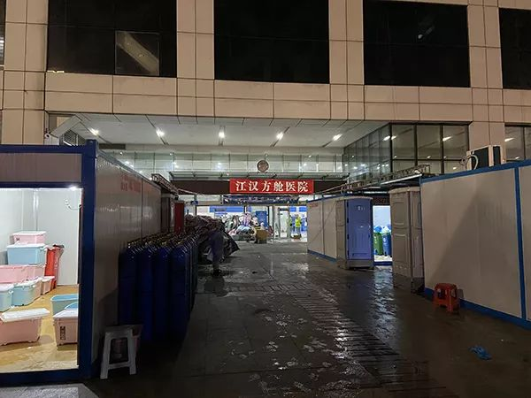
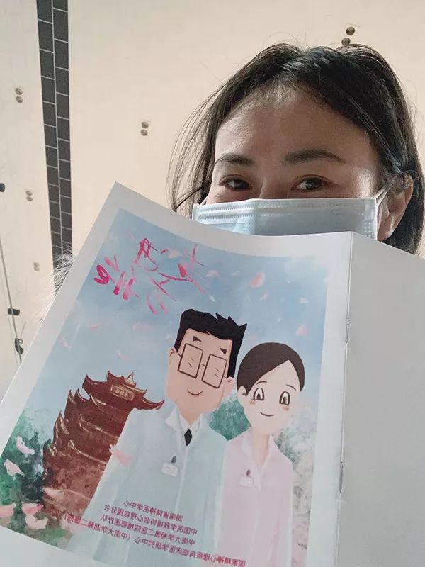
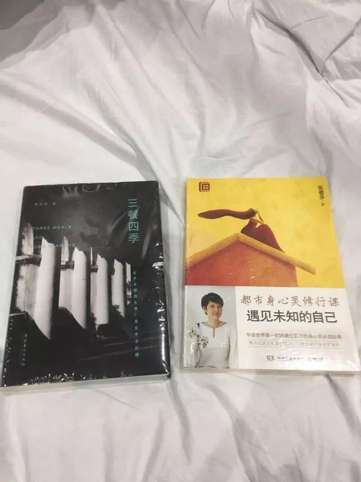
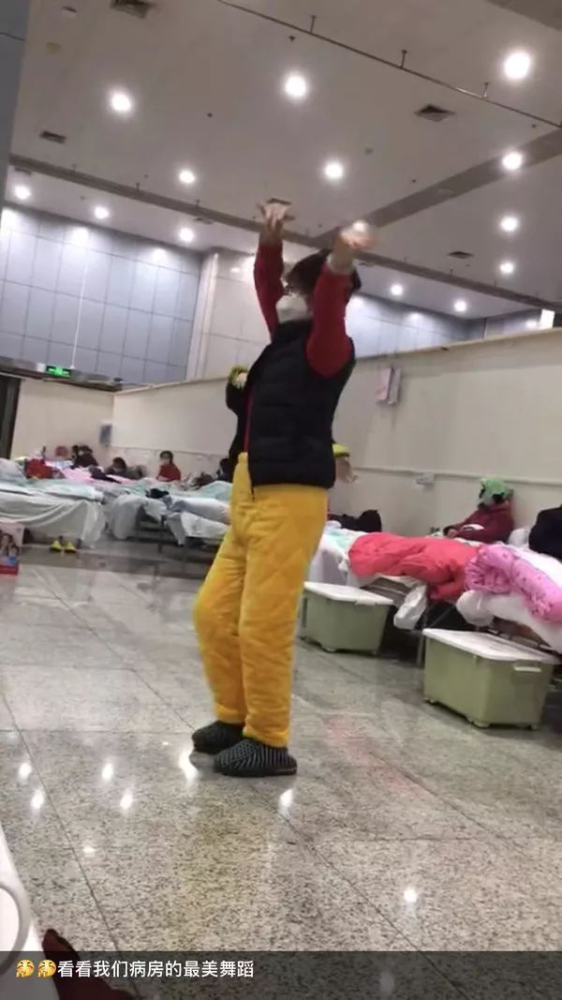

护士方舱日记 | 患者竖起大拇指，一切都值得
原文链接 备份链接 实习生 于洋 澎湃新闻记者 赵思维 2月5日晚，湖北武汉洪山体育馆改造的武昌方舱医院开始接收首批新冠肺炎轻症患者。至11日8时，武昌方舱医院先后投入120名医生、400名护士的医护力量，目前仍有437位轻症患者在接受治 …
澎湃新闻记者 赵思维 发自武汉
2月6日下午，江汉方舱医院内，一名协和医院的女护士轻声播音一段初来的问候。来源：@武汉发布(01:17)
“初来陌生的环境，您可能不太适应，甚至感到紧张或焦虑，我们能够理解。希望大家能跟着音乐的节奏，一起放松自己的身体，平复自己的心情。”2月6日下午，湖北武汉江汉方舱医院内，来自华中科技大学附属协和医院的女护士柔声说道。
华中科技大学附属协和医院护理部副主任、方舱医院心理疏导小组牵头人胡德英说，为缓解患者初到方舱医院的紧张情绪，协和医院在接管江汉方舱医院后，率先在方舱医院引入心理疏导机制，由协和医院心理咨询专家小组进驻。
澎湃新闻了解到，在已合计收治超2000名新冠肺炎患者的武昌和江汉两所方舱医院，医护团队在如何安抚患者情绪，进行心理疏导方面交出了一份不错的成绩单。
成绩单背后，有改善患者养疗环境、开设广播台回应问题知识科普、编印心理手册引导自我疏导等举措，也有医护人员贴心细致服务，用行动阐释方舱设立的意义和医护所做的努力。武汉方舱医院内出现越来越多的“跳舞姐”、“做操患者”。
但不可忽略的是，目前仍然存在患者数量多、专业心理医生数量少等问题。武汉大学中南医院高级心理咨询师、湖北省心理咨询师协会会长肖劲松2月10日告诉澎湃新闻，社会心理咨询力量进入方舱进行心理疏导有风险行为，一线医护人员亲身进行心理安抚和患者远程接受减压疏导，是目前比较可行的措施。

收治近1600名新冠肺炎患者的江汉方舱医院 澎湃新闻记者 赵思维 图
病人数量多，专业心理医生数量少
2月5日晚，江汉方舱医院、武昌方舱医院接收首批新冠肺炎轻症患者。
此后，有入住的患者因为服务设施、医护配置等问题产生不满情绪，甚至出现患者因不满踢翻垃圾桶、和其他患者深夜吵架的情况出现。
南京市心理危机干预中心主任、心理学博士张纯向澎湃新闻解读，人对于未知的恐惧叫“原始恐惧”，陌生的环境、封闭的空间、“死亡”的威胁，会影响到人的情绪。这种情绪相互感染，能量累加，就会出现焦虑、焦灼、暴躁的情绪反应，轻则表现不满，重则出现破坏及攻击的行为。

武昌方舱医院外景 澎湃新闻记者 赵思维 图
当人们的活动范围小了，社会交往少，自我评价低，又持续生活在一个幽闭狭小的空间里，就极易出现个体的破坏性行为。从心理学的角度说，情绪是压力的溢出效应，压力是情绪的内在动力。如果个体情绪找不到“攻击的靶标”，就会出现心理学意义上的“代偿行为”，这就是这类“方舱效应”的心理动力。
武汉大学中南医院高级心理咨询师、湖北省心理咨询师协会会长肖劲松和他的团队自武汉“封城”之日起，就一直利用专业所长为市民和医护提供心理方面的帮扶。
他认为，方舱医院的患者症状都较轻，他们面对的除了专业的诊疗护理方面问题外，还有室内温度、饭菜质量等生活方面的问题，“实际是后勤保障这种生活管理背后的心理管理，需要心理介入。”
但是这种心理介入又和以前地震这类灾区心理救援的情况不一样，患者住院期间，社会的心理咨询师进入医院，一是没有这个资质，二是也会把他们陷入一种危险的境地，因为他们也没有受过专业培训。
肖劲松认为，在患者数量多，专业心理医生数量少，这样目前一个的失衡局面下，排除社会心理咨询力量后，一线医护人员亲身心理安抚和患者远程接受减压疏导成为目前比较可行的措施。
他解释，进入方舱医院的医护人员上学时都学过心理学，只不过大部分毕业后没有做这方面的工作。由专业团队对医护人员做简单培训，让他们成为一个非专业的心理工作者，可以做一些心理安抚工作。“如果有专业团队做培训，就做培训；如果没有，就可以求助于社会力量做培训。”
在对新冠肺炎患者和医护心理疏导多日后，肖劲松团队编写了“新型冠状病毒感染的肺炎疫情心理干预手册”。
该手册从确诊患者、疑似患者、医护及相关人员、与患者密切接触者的干预、有发热但不愿公开就医人群的干预等群体的心理干预和减压措施进行了详细说明。
按照该手册，确诊、进行隔离治疗的患者的心理症状一般为麻木、愤怒、恐惧、抑郁、孤独，或因对疾病的恐惧而不配合、放弃治疗等。
在这种情况下，要采取根据患者所能接受的程度，客观如实交代病情和外界疫情，使患者做到心中有数；协助与外界亲人沟通，转达信息，建立社会支持系统；积极鼓励患者配合治疗；帮助反映问题，尽量协助改善患者就医环境等措施。

武昌方舱医院内的患者手持《走进方舱》心理手册 受访者供图
编印心理手册，医护用行动缓和患者情绪
武昌方舱医院是此次首批三处改造启用的方舱医院之一，计划容纳800张病床。2月5日晚正式收治第一批患者以来，截至2月10日上午8点，已收治467名新冠肺炎轻症患者。
武汉大学人民医院副院长、武昌方舱医院负责人万军2月10日告诉澎湃新闻，针对患者反映的心理方面的问题，一方面是动态改善病人的养疗环境，提高患者的取暖和伙食标准。另一方面，通过设立院内广播台、编印《走进方舱》心理疏导手册、成立病友党总支等形式及时解答大家的问题，避免出现情绪恐慌，进行心理疏导。
此外，一线的医护人员也通过自身贴心周到的服务来做“无声”的心理疏导。万军说，来支援武汉的医护人员大部分来自外省，很多人都是90、95后，虽然经过了简单的培训，但是对于传染病的知识不是很够。供暖，对于患者来说舒服，但是对于穿着防护服的医护人员感受恶劣。高湿度、高温度的环境，对体力消耗非常大，但没有一个人叫苦叫累，有的累倒了起来还继续坚持工作。
这种非常专业、信心、耐心，忘我地为病人服务精神其实也感染着每一个患者，患者也就能够换位思考，情绪缓好很多，出现了很多跳舞做操的患者。
万军所提到的《走进方舱》手册是由援助武汉、入驻武昌方舱医院提供诊疗服务的中南大学湘雅二医院医护团队，根据方舱医院的特点和患者的常见问题编印下发。
澎湃新闻查阅发现，该手册从如何做好个人防护到出院标准的解答，从压力下心理反应识别、如何调节焦虑情绪到呼吸放松、积极暗示、室内锻炼方法等技术介绍，试图教会患者在方舱医院治疗期间，如何建立心理防线，战胜疾病。
湘雅二医院相关负责人告诉澎湃新闻，在入驻武昌方舱医院后，看到新冠肺炎形势严峻，帮助患者克服心中的恐慌和不安已是当务之急，便紧急动员院内精神科负责人编写了该册子，并在2月7日晚上加急印刷1000册，发放至每位患者手中。
“一方面是帮助患者减压，另一方面，也为医务人员对患者心理问题的识别和疏导工作提供科学指导，保证救治工作科学化、合理化、精准施策。”

江汉方舱医院内开设的广播台 受访者供图
开设院内广播，出现多个“跳舞姐”
另一边，收治近1600名患者的江汉方舱医院也在寻求建立医患沟通渠道，对患者开展心理疏导工作。

江汉方舱医院护士给患者提供的书籍 受访者供图
华中科技大学附属协和医院党委副书记、江汉方舱医院负责人孙晖2月9日晚告诉澎湃新闻，目前在院内已经开展包括成立包含患者的党支部，号召患者自助性社会服务；开设院内广播台，回答问题科普知识；成立心理疏导组，到一线与患者沟通；建立读书角等举措。
“昨天（8日）我们就针对卫生间堵的问题，在广播中提到要爱护自己的环境，今天情况就要好一些了。”孙晖说。
华中科技大学附属协和医院护理部副主任、方舱医院心理疏导小组牵头人胡德英说，为缓解患者初到方舱医院的紧张情绪，协和医院在接管江汉方舱医院后，率先在方舱医院引入心理疏导机制，由协和医院心理咨询专家小组进驻。
方舱内，专业的心理疏导还是由心理咨询室的老师负责，他们单独建立了一个协和医院的护士心理疏导群，还有患者热线，开通了线上咨询。而咨询值班的、广播值班的都是心理疏导志愿者，大家都是在自己闲暇时间值班，志愿者也都拿了心理咨询师证书。“一些人是基本上没上班但是志愿去的，已经去了两天，后面会排班。”
胡德英建议，在志愿者护士当中，选派一定比例是心理咨询师的护士，这样可以对患者提供身心方面的护理，是一个很完整的优质护理过程。
广播作为一种大众传播媒介，在方舱内发挥沟通作用。
澎湃新闻获得的一段江汉方舱医院内部广播台播音视频显示，2月6日下午，一名协和医院的女护士轻声播音一段初来的问候，“初来陌生的环境，您可能不太适应，甚至感到紧张或焦虑，我们能够理解。”广播最后放了一段轻音乐，“希望大家能跟着音乐的节奏，一起放松自己的身体，平复自己的心情。”
2月8日下午，广播台再次传来柔和的声音。“这里是江汉方舱医院广播台，我是协和医院的医务人员小婧。元宵佳节本该和家人一起团团圆圆给过年画上句号，但新冠肺炎的肆虐，让我们经历一个平凡的节日……”
胡德英告诉澎湃新闻，广播主要通过病房的护士把病人的意见收集，然后把大家关心的问题在广播里进行解答。现在广播是一天早中晚播三次，结束时播放轻音乐。“我们（在来之后的）第二天的时候唱了《我和我的祖国》，大伙儿都很重视，我们倡导患者如果体力可以的话带上口罩跟我们一起唱。”
从效果看，现在患者情绪比之前来的时候好很多，网上比较火的“读书哥”、“跳舞姐”就是一个真实写照，每天护士都会抽时间带着大家做些运动。胡德英向澎湃新闻介绍，方舱内患者为新冠肺炎的轻症患者，生活能自理，平时休养比较苦闷，做操和跳舞正好可以缓解心情，反响较好。网友担心的吵到其他人等问题，因为频次也不是很高，目前并未收到相关投诉。

江汉方舱医院内的“跳舞姐” 受访者供图
2月9日，澎湃新闻联系到拍摄“跳舞姐”的江汉方舱医院患者何女士，她于5日确诊感染新冠病毒，6日入住位于武汉国际会展中心的方舱医院。入住第二天，她拍下了患者跳舞的视频。
相比一些患者出现焦虑情绪，何女士显得十分乐观。来到方舱医院后，她没有因入住条件有限而抱怨，反而是每天更积极去面对生活，看到有患者在跳舞，她也会加入进去一起舞蹈。她常常在朋友圈里晒出自己的一日三餐，怀着感恩的心去面对帮助过她的医护人员。“希望大家都能少一点抱怨，多一点理解。”
（实习生 张浩容 李娴 孟津津 李宁馨 胡友美 对本文亦有贡献）
本期编辑 邢潭
推荐阅读


原文链接 备份链接 实习生 于洋 澎湃新闻记者 赵思维 2月5日晚，湖北武汉洪山体育馆改造的武昌方舱医院开始接收首批新冠肺炎轻症患者。至11日8时，武昌方舱医院先后投入120名医生、400名护士的医护力量，目前仍有437位轻症患者在接受治 …
原文链接 备份链接 司机停下车来思忖着说，怎么给导到这里来了？ 那是一条土路，树在旁边矗立着。春天还没到来，它的叶子还没长出来。 “前方800米左转，500米后再左转”，导航里的声音软糯着。 金银潭医院是此次行程的目的地。这是武汉市最大的 …
原文链接 备份链接 澎湃新闻记者 赵思维 廖艳 薛莎莎 2月11日16时许，武汉武昌方舱医院首批28名新冠肺炎患者康复出院。澎湃新闻（www.thepaper.cn）记者现场看到，来自不同街道办和社区的工作人员提前来到等候区，举牌等患者出 …
原文链接 备份链接 2 月 9 日下午，在被方舱医院「退回」4 天后，刘俊一家被街道居委会通知，当日会安排车辆送其父母入院治疗。 在此之前，经历了数日的网络求助，刘俊一度感到入院无望，特别是在父亲退烧后，几乎接受了无法入院治疗的事实。对于 …
原文链接 备份链接 06.02.2020本文字数：4302，阅读时长大约7.5分钟 导读：一周时间，武汉新增病例5.5倍增长，累计病例增长3.69倍。 作者 | 第一财经 马晓华 胥会云 武汉封城之后，湖北以外的各省份对新型肺炎展开了“ …